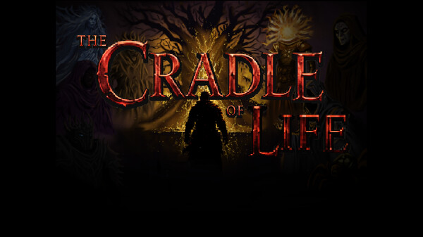
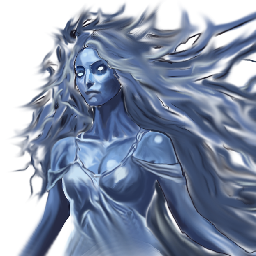
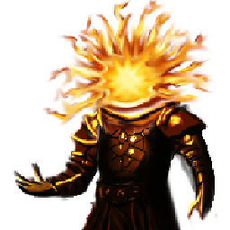
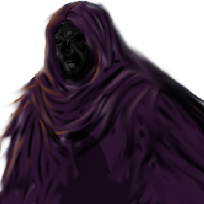
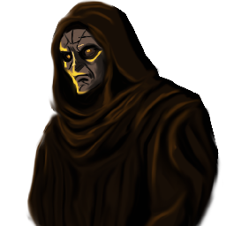
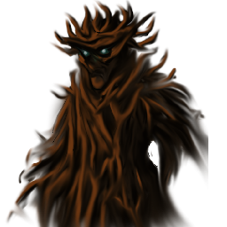
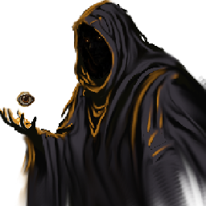

One-sentence description
30 wordsThe Cradle of Life is a dark-fantasy tactical RPG where Caelis searches for the Needle, fights on tactical grids, enters reality-warping Shimmers, and draws the attention of six competing gods.
Official press kit
Dark Fantasy Tactical RPG
The world is dying. Six gods disagree on what should replace it.
Descriptions for coverage
These descriptions can be used as written or shortened for coverage.
The Cradle of Life is a dark-fantasy tactical RPG where Caelis searches for the Needle, fights on tactical grids, enters reality-warping Shimmers, and draws the attention of six competing gods.
The Cradle of Life is a dark-fantasy tactical RPG about Caelis, a warrior sent to find a forgotten relic called the Needle. Combat takes place on a grid and uses Action Points, positioning, height, weapon reach, Poise, wounds, Hunger, and Psych. Outside combat, players explore Thornvale without a trail of objective markers, speak with its people, and search for clues in the environment. Shimmers distort familiar places, and six gods begin paying attention to what Caelis does. The Steam demo covers the opening journey through Thornvale.
Shimmers are appearing without warning. They change familiar places, and sometimes whole villages disappear. The gods have been silent for centuries, but that silence is ending. Caelis is sent to find the Needle, a relic people remember differently depending on whom he asks. His search begins in Thornvale, where the roads, ruins, homes, and surrounding wilderness hold as much information as the people living there. The game does not mark every answer. Players are expected to ask questions, read, and look around. Combat uses a tactical grid and Action Points. Movement, height, weapon reach, armor, wounds, Poise, fear, and terrain affect each turn. Hunger and Psych continue outside combat, so arriving at a fight in poor condition can matter. Players can customize Caelis's appearance, which is reflected in both his world sprite and portrait. Weapon familiarity, Resolve, and decisions develop over the course of play. The current Steam demo contains the opening section in Thornvale and introduces the Shimmers and the six gods without revealing their larger role.
How it plays
These are the main systems available in the current Steam demo.
Combat takes place on a grid. Movement costs Action Points, and positioning, height, weapon reach, armor, wounds, and Poise affect what a player can do each turn.
The game does not draw a glowing line to every objective. Players find quests and information by talking to people, reading, and checking houses, roads, caves, ruins, and forests.
Shimmers distort familiar places and make them dangerous. Their cause is one of the game's central mysteries.
Hunger and Psych continue outside combat. Ignoring them can leave Caelis in worse condition when the next fight starts.
Players choose Caelis's appearance, hair, beard, colors, and equipment. His world sprite and portrait both reflect those choices.
Each god wants something different for the world. They notice what Caelis says and does, and their interests do not align.
Current Steam media
Full-resolution JPG files with individual downloads.
Gameplay clips
Four short gameplay captures are being recorded. This section will be added when they are ready.
A tactical encounter showing movement, Action Points, terrain, height, status effects, and enemy behavior.
A glimpse of the Shimmer and its visual distortion effects.
A look at Caelis's character creation options.
Exploring the roads, ruins, and wilderness around Thornvale.
Official video
The current official teaser is hosted on Steam.

The world
Shimmers are appearing across the world, and the six gods have begun speaking again after centuries of silence. They do not agree on what should happen next, and each one responds differently to Caelis's decisions.
This press kit avoids the Shimmers' origins, the gods' motives, and later plot developments.






About the developer
Garrett Mickelsen is the solo developer of The Cradle of Life, an independent tactical RPG made in RPG Maker MZ. He is also an active-duty U.S. Marine officer and military historian. The game began as a personal project built around his interests in history, mythology, and storytelling. Some of its oldest lore came from stories his father told around campfires when he was young.
Most of the work is done in his spare time around military service and family life. The game combines exploration, player choice, character customization, and grid-based combat in a dark fantasy setting of gods and forgotten places.
The Cradle of Life is an independent project and is not affiliated with or endorsed by the U.S. Marine Corps or Department of Defense.
For press and creators
Coverage is welcome. These guidelines apply to the public demo and approved materials supplied through this press kit.
For coverage and interviews
Simple phonetic spellings for major names.
All media in one file
Full-resolution screenshots, current web artwork, approved fact-sheet copy, developer information, creator guidelines, and source notes.
Download ZIPA transparent logo and print-quality key-art master are not available yet.
Download Transparent Logo Download Transparent Logo (SVG) Download Key Art{kind=link}
{kind=link}
{kind=link}
{kind=link}
{kind=link}
{kind=link}
{kind=link}
{kind=link}
{kind=link}
{kind=link}
{kind=link}
{kind=link}
{kind=link}
{kind=link}